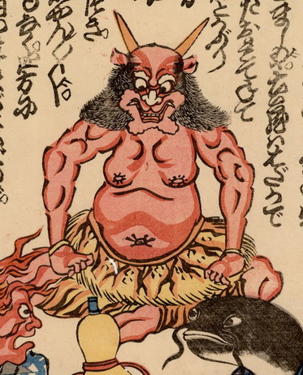

虎皮の腰巻きをはいた赤鬼。正座して両手を膝につき、狐拳の庄屋のポーズをとっている。頭には2本の角が生えており、襟足が長い。
出典：親書誌：U426_nichibunken_0217：世直し拳；ヨナオシケン／日付：2010／資源識別子：U426_nichibunken_0217_0002_0000
Copyright (c)2010- International Research Center for Japanese Studies, Kyoto, Japan. All rights reserved.